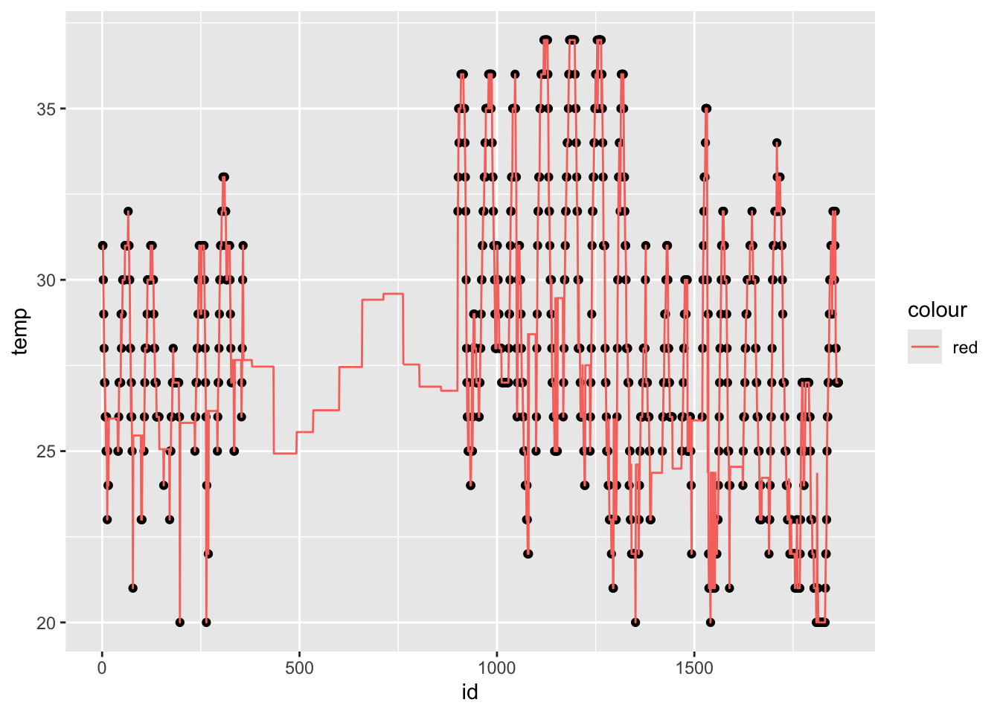

Week 5: Data Wrangling
PM 566: Introduction to Health Data Science
Today’s goals
We will learn about how to manipulate data, and in particular,
- Selecting variables.
- Filtering data.
- Creating variables.
- Summarize data.
Throughout the session we will see examples using:
- data.table in R,
- dtplyr in R, and
- pydatatable
All with the MET dataset.
Disclaimer
There’s a lot of extraneous information in these slides! While the data.table package and Python both have a lot of useful functionality, we strongly recommend sticking to the base R and tidyverse tools presented here. Slides covering material outside this scope will be marked with an asterisk (*); you should be extremely cautious about using code from those slides!
Data wrangling in R
Overall, you will find the following approaches:
base R: Use only base R functions.
dplyr: Using “verbs”.
data.table: High-performing (ideal for large data)
dplyr + data.table = dtplyr: High-performing + dplyr verbs.
Other methods involve, for example, using external tools such as Spark, sparkly.
We will be focusing on data.table because of this
Take a look at this very neat cheat sheet by Erik Petrovski here.
Selecting variables: Load the packages
The dtplyr R package translates dplyr (tidyverse) syntax to data.table, so that we can still use the dplyr verbs while at the same time leveraging the performance of data.table.
Loading the data
The data that we will be using is an already processed version of the MET dataset. We can download (and load) the data directly in our session using the following commands:
# Where are we getting the data from
met_url <- "https://github.com/USCbiostats/data-science-data/raw/master/02_met/met_all.gz"
# Downloading the data to a tempfile (so it is destroyed afterwards)
# you can replace this with, for example, your own data:
tmp <- tempfile(pattern = "met", fileext = ".gz")
# tmp <- "met.gz"
# We should be downloading this, ONLY IF this was not downloaded already.
# otherwise is just a waste of time.
if (!file.exists(tmp)) {
download.file(
url = met_url,
destfile = tmp,
# method = "libcurl", timeout = 1000 (you may need this option)
)
}Now we can load the data using the read.csv() or fread() functions.
Read the Data
In R (base)
In R (data.table)
In Python
Before we continue, let’s learn a bit more on data.table and dtplyr
* data.table and dtplyr: Data Table’s Syntax
- As you have seen in previous lectures, in
data.tableall happens within the square brackets. Here is common way to imagine DT:

- Any time that you see := in j that is “Assignment by reference.” Using = within j only works in some specific cases.
* data.table and dtplyr: Data Table’s Syntax
Operations applied in j are evaluated within the data, meaning that names work as symbols, e.g.,
Furthermore, we can do things like this:

* data.table and dtplyr: Lazy table
The
dtplyrpackage provides a way to translatedplyrverbs todata.tablesyntax.The key lies on the function
lazy_dtfromdtplyr(see?dtplyr::lazy_dt).This function creates a wrapper that “points” to a
data.tableobject
* data.table and dtplyr: Lazy table (cont.)

Question: What is the immutable = FALSE option used for?
* Selecting columns
How can we select the columns USAFID, lat, and lon, using data.table:
What happens if instead of list() you used c()?
Selecting columns (cont. 1)
Using base R:
Selecting columns (cont. 2)
Using the dplyr::select verb:
* Selecting columns (cont. 3)
In the case of pydatatable
What happens if instead of ["USAFID", "lat", "lon"] you used {"USAFID", "lat", "lon"} (vector vs set).
For the rest of the session we will be using these variables: USAFID, WBAN, year, month, day, hour, min, lat, lon, elev, wind.sp, temp, and atm.press.
Data filtering: Logical conditions
Based on logical operations, e.g.
condition 1 [and|or condition2 [and|or ...]]Need to be aware of ordering and grouping of
andandoroperators.Fundamental logical operators:
| x | y | Negate !x |
And x & y |
Or x | y |
Xor xor(x, y) |
|---|---|---|---|---|---|
| true | true | false | true | true | false |
| false | true | true | false | true | true |
| true | false | false | false | true | true |
| false | false | true | false | false | false |
- Fundamental relational operators, in R:
<,>,<=,>=,==,!=.
Questions 1: How many ways can you write an XOR operator?
Write a function that takes two arguments (x,y) and applies the XOR operator element wise. Here you have a template:
myxor <- function(x, y) {
res <- logical(length(x))
for (i in 1:length(x)) {
res[i] <- # do something with x[i] and y[i]
}
return(res)
}Or if vectorized (which would be better)
Hint 1: Remember that negating (x & y) equals (!x | !y).
Hint 2: Logical operators are a distributive, meaning a * (b + c) = (a * b) + (a + c), where * and + are & or |.
In R
myxor1 <- function(x,y) {(x & !y) | (!x & y)}
myxor2 <- function(x,y) {!((!x | y) & (x | !y))}
myxor3 <- function(x,y) {(x | y) & (!x | !y)}
myxor4 <- function(x,y) {!((!x & !y) | (x & y))}
cbind(
ifelse(xor(test[,1], test[,2]), "true", "false"),
ifelse(myxor1(test[,1], test[,2]), "true", "false"),
ifelse(myxor2(test[,1], test[,2]), "true", "false"),
ifelse(myxor3(test[,1], test[,2]), "true", "false"),
ifelse(myxor4(test[,1], test[,2]), "true", "false")
) [,1] [,2] [,3] [,4] [,5]
[1,] "false" "false" "false" "false" "false"
[2,] "true" "true" "true" "true" "true"
[3,] "true" "true" "true" "true" "true"
[4,] "false" "false" "false" "false" "false"* Or in python
* Or in python (bis)
We will now see applications using the met dataset
Filtering (subsetting) the data
Say we need to select records according to some criteria. For example:
- First day of the month, and
- Above latitude 40, and
- Elevation outside the range 500 and 1,000.
The logical expressions would be
(day == 1)(lat > 40)((elev < 500) | (elev > 1000))
Respectively.
* data.table
In R with data.table:
In base R:
USAFID WBAN year month day hour min lat lon elev wind.sp temp
3009 720113 54829 2019 8 1 0 15 42.543 -83.178 222 1.5 25.0
3010 720113 54829 2019 8 1 0 39 42.543 -83.178 222 2.6 24.4
3011 720113 54829 2019 8 1 0 57 42.543 -83.178 222 4.1 24.0
3012 720113 54829 2019 8 1 1 15 42.543 -83.178 222 4.1 23.5
3013 720113 54829 2019 8 1 1 16 42.543 -83.178 222 3.6 23.5
3014 720113 54829 2019 8 1 1 35 42.543 -83.178 222 3.1 23.0
atm.press
3009 NA
3010 NA
3011 NA
3012 NA
3013 NA
3014 NAIn R with dplyr::filter():
USAFID WBAN year month day hour min lat lon elev wind.sp temp
1 720113 54829 2019 8 1 0 15 42.543 -83.178 222 1.5 25.0
2 720113 54829 2019 8 1 0 39 42.543 -83.178 222 2.6 24.4
3 720113 54829 2019 8 1 0 57 42.543 -83.178 222 4.1 24.0
4 720113 54829 2019 8 1 1 15 42.543 -83.178 222 4.1 23.5
5 720113 54829 2019 8 1 1 16 42.543 -83.178 222 3.6 23.5
6 720113 54829 2019 8 1 1 35 42.543 -83.178 222 3.1 23.0
atm.press
1 NA
2 NA
3 NA
4 NA
5 NA
6 NAIn Python
In the case of pydatatable we use dt.f. to refer to a column. df. is what we use to refer to datatable’s namespace.
The f. is a symbol that allows accessing column names in a datatable’s Frame.
Questions 2
How many records have a temperature within 18 and 25?
Some records have missing values. Count how many records have
tempasNA.Following the previous question, plot a sample of 1,000 pairs of
(lat, lon)coordinates for (a) the stations withtempasNAand (b) those with data.
Solutions
Solutions (cont.)
# Question 3
# Drawing a sample
set.seed(123)
idx1 <- sample(which(is.na(dat$temp)), 1000)
idx2 <- sample(which(!is.na(dat$temp)), 1000)
# Visualizing the data
# make a map of the US, as we did last class
ggplot(map_data("state"), aes(x = long, y = lat)) +
geom_map(aes(map_id = region), map = map_data("state"), col = "lightgrey", fill = "gray") +
geom_jitter(
data = dat[c(idx1, idx2), ],
mapping = aes(x = lon, y = lat, col = is.na(temp)),
inherit.aes = FALSE, alpha = .5, cex = 2
)
Creating variables: Data types
logical: Bool true/false type, e.g. dead/alive, sick/healthy, good/bad, yes/no, etc.
strings: string of characters (letters/symbols), e.g. names, text, etc.
integer: Numeric variable with no decimal (discrete), e.g. age, days, counts, etc.
double: Numeric variable with decimals (continuous), e.g. distance, expression level, time.
In C (and other languages), strings, integers, and doubles may be specified with size, e.g. in python integers can be of 9, 16, and 32 bits. This is relevant when managing large datasets, where saving space can be fundamental (more info).
Creating variables: Special data types
Most programming languages have special types which are built using basic types. A few examples:
time: Could be date, date + time, or a combination of both. Usually it has a reference number defined as date 0. In R, the
Dateclass has as reference 1970-01-01, in other words, “days since January 1st, 1970”.categorical: Commonly used to represent strata/levels of variables, e.g. a variable “country” could be represented as a factor, where the data is stored as numbers but has a label.
ordinal: Similar to factor, but it has ordering, e.g. “satisfaction level: 5 very satisfied, …, 1 very unsatisfied”.
Other special data types could be ways to represent missings (usually described as na or NA), or special numeric types, e.g. +-Inf and Undefined (NaN).
When storing/sharing datasets, it is a good practice to do it along a dictionary describing each column data type/format.
Questions 3: What’s the best way to represent the following
0, 1, 1, 0, 0, 1
Diabetes type 1, Diabetes type 2, Diabetes type 1, Diabetes type 2
on, off, off, on, on, on
5, 10, 1, 15, 0, 0, 1
1.0, 2.0, 10.0, 6.0
high, low, medium, medium, high
-1, 1, -1, -1, 1,
.2, 1.5, .8, \(\pi\)
\(\pi\), \(\exp{1}\), \(\pi\), \(\pi\)
Variable creation
If we wanted to create two variables, elev^2 and the scaled version of wind.sp by it’s standard error, we could do the following
Variable creation (cont. 1)
With the verb dplyr::mutate():
USAFID WBAN year month day hour min lat lon elev wind.sp temp
1 690150 93121 2019 8 1 0 56 34.3 -116.166 696 5.7 37.2
2 690150 93121 2019 8 1 1 56 34.3 -116.166 696 8.2 35.6
3 690150 93121 2019 8 1 2 56 34.3 -116.166 696 6.7 34.4
4 690150 93121 2019 8 1 3 56 34.3 -116.166 696 5.1 33.3
5 690150 93121 2019 8 1 4 56 34.3 -116.166 696 2.1 32.8
6 690150 93121 2019 8 1 5 56 34.3 -116.166 696 0.0 31.1
atm.press elev2 windsp_scaled
1 1009.9 484416 2.654379
2 1010.3 484416 3.818580
3 1010.6 484416 3.120059
4 1011.6 484416 2.374970
5 1012.7 484416 0.977929
6 1012.7 484416 0.000000Variable creation (cont. 2)
Imagine that we needed to scale multiple variables by their SD and didn’t want to copy-paste this code several times. Here’s how we could do it automatically for a given list of variable names:
Why can’t we use dat$var inside the loop?
* Or with data.table
Key things to notice here: c(out_names), .SD, and .SDCols.
Variable creation (cont. 3)
In the case of dplyr, we could use the following
names <- c("wind.sp", "temp", "atm.press")
dat |>
mutate(
across(
all_of(names),
function(x) x/sd(x, na.rm = TRUE),
.names = "{col}_scaled2"
)
) |>
# Just to print the last columns
select(ends_with("_scaled2")) |>
head(n = 4) wind.sp_scaled2 temp_scaled2 atm.press_scaled2
1 2.654379 6.139348 248.7889
2 3.818580 5.875290 248.8874
3 3.120059 5.677247 248.9613
4 2.374970 5.495707 249.2077Complex variable creation
Don’t forget about loops! for loops and sapply may be slow on a dataset of this size, but they can be quite handy for creating variables that rely on complicated relationships between variables. Consider this a “brute force” approach. Vectorized methods will always be faster, but these can be easier to conceptualize and, in rare cases, may be the only option.
Consider the problem creating a weird variable: wind.temp. This will take on 4 possible values, based on the temperature and wind speed: cool & still, cool & windy, warm & still, or warm & windy. We will split each variable based on their median value. Note that this code is too slow to actually run on this large dataset.
Complex variable creation (cont 1)
Here’s how we would do that with the sapply function (and a custom, unnamed function):
# create the new variable one entry at a time
wind.temp <- sapply(1:nrow(dat), function(i){
if(is.na(dat$temp[i]) | is.na(dat$wind.sp[i])){
return(NA)
}
if(dat$temp[i] <= median(dat$temp, na.rm=TRUE)){
if(dat$wind.sp[i] <= median(dat$wind.sp, na.rm=TRUE)){
return('cool & still')
}else{
return('cool & windy')
}
}else{
if(dat$wind.sp[i] <= median(dat$wind.sp, na.rm=TRUE)){
return('warm & still')
}else{
return('warm & windy')
}
}
})Check: what would we need to change to add this variable to our dataset?
Complex variable creation (cont 2)
Here’s the code for doing that with a for loop:
# initialize a variable of all missing values
wind.temp <- rep(NA, nrow(dat))
# fill in the values one at a time
for(i in 1:nrow(dat)){
if(is.na(dat$temp[i]) | is.na(dat$wind.sp[i])){
return(NA)
}else{
if(dat$temp[i] <= median(dat$temp, na.rm=TRUE)){
if(dat$wind.sp[i] <= median(dat$wind.sp, na.rm=TRUE)){
wind.temp[i] <- 'cool & still'
}else{
wind.temp[i] <- 'cool & windy'
}
}else{
if(dat$wind.sp[i] <= median(dat$wind.sp, na.rm=TRUE)){
wind.temp[i] <- 'warm & still'
}else{
wind.temp[i] <- 'warm & windy'
}
}
}
}Check: why do we need to include na.rm=TRUE when calculating the medians?
Complex variable creation (cont 3)
Here’s a simple vectorized approach that will actually run on a large dataset. This works for our current case, but it’s still a brute force approach, because we had to specifically assign every possible value of our new variable. You can imagine that as the number of possible values increases, this code will get increasingly cumbersome.
# initialize a variable of all missing values
wind.temp <- rep(NA, nrow(dat))
# assign every possible value by subsetting
wind.temp[dat$temp <= median(dat$temp, na.rm=TRUE) &
dat$wind.sp <= median(dat$wind.sp, na.rm=TRUE)] <- 'cool & still'
wind.temp[dat$temp <= median(dat$temp, na.rm=TRUE) &
dat$wind.sp > median(dat$wind.sp, na.rm=TRUE)] <- 'cool & windy'
wind.temp[dat$temp > median(dat$temp, na.rm=TRUE) &
dat$wind.sp <= median(dat$wind.sp, na.rm=TRUE)] <- 'warm & still'
wind.temp[dat$temp > median(dat$temp, na.rm=TRUE) &
dat$wind.sp > median(dat$wind.sp, na.rm=TRUE)] <- 'warm & windy'
head(wind.temp)[1] "warm & windy" "warm & windy" "warm & windy" "warm & windy" "warm & still"
[6] "warm & still"Merging data
While building the MET dataset, we dropped the State data.
We can use the original Stations dataset and merge it to the MET dataset.
But we cannot do it right away. We need to process the data somewhat first.
Merging data (cont. 1)
stations <- fread("https://noaa-isd-pds.s3.amazonaws.com/isd-history.csv")
stations <- as.data.frame(stations)
stations$USAF <- as.integer(stations$USAF)
# Dealing with NAs and 999999
stations$USAF[stations$USAF == 999999] <- NA
stations$CTRY[stations$CTRY == ""] <- NA
stations$STATE[stations$STATE == ""] <- NA
# Selecting the three relevant columns, and keep unique records
stations <- unique(stations[, c('USAF', 'CTRY', 'STATE')])
# Dropping NAs
stations <- stations[!is.na(stations$USAF), ]
head(stations, n = 4) USAF CTRY STATE
1 7018 <NA> <NA>
2 7026 AF <NA>
3 7070 AF <NA>
4 8260 <NA> <NA>Merging data (cont. 2)
merge(
# Data
x = dat,
y = stations,
# List of variables to match
by.x = "USAFID",
by.y = "USAF",
# Which obs to keep?
all.x = TRUE,
all.y = FALSE
) |> nrow()[1] 2385443This is more rows! The original dataset, dat, has 2377343. This means that the stations dataset has duplicated IDs. We can fix this:
Merging data (cont. 3)
We now can use the function merge() to add the extra data
dat <- merge(
# Data
x = dat,
y = stations,
# List of variables to match
by.x = "USAFID",
by.y = "USAF",
# Which obs to keep?
all.x = TRUE,
all.y = FALSE
)
head(dat[, c('USAFID', 'WBAN', 'STATE')], n = 4) USAFID WBAN STATE
1 690150 93121 CA
2 690150 93121 CA
3 690150 93121 CA
4 690150 93121 CAWhat happens when you change the options all.x and all.y?
* Aggregating data: Adding grouped variables
Many times we need to either impute some data, or generate variables by strata.
If we, for example, wanted to impute missing temperature with the daily state average, we could use by together with the data.table::fcoalesce() function:
Aggregating data: Adding grouped variables
- In the case of dplyr, we can do the following using dplyr::group_by() together with dplyr::coalesce():
Aggregating data: Adding grouped variables (cont. 1)
Let’s see how it looks:
# Preparing for plotting
# select single station, sort by date
plotdata <- dat[dat$USAFID == 720172, ]
plotdata <- plotdata[order(plotdata$year, plotdata$month, plotdata$day, plotdata$hour, plotdata$min), ]
# Generate an 'x' variable for time
plotdata$id <- 1:nrow(plotdata)
plot(plotdata$id, plotdata$temp, pch=16)
lines(plotdata$id, plotdata$temp_imp, col=2)
Aggregating data: Adding grouped variables (cont. 2)
Aggregating data: Adding grouped variables (cont. 3)
Note that when you use group_by(), your data stays grouped.
# A tibble: 6 × 21
# Groups: STATE, year, month, day [1]
USAFID WBAN year month day hour min lat lon elev wind.sp temp
<int> <int> <int> <int> <int> <int> <int> <dbl> <dbl> <int> <dbl> <dbl>
1 690150 93121 2019 8 1 0 56 34.3 -116. 696 5.7 37.2
2 690150 93121 2019 8 1 1 56 34.3 -116. 696 8.2 35.6
3 690150 93121 2019 8 1 2 56 34.3 -116. 696 6.7 34.4
4 690150 93121 2019 8 1 3 56 34.3 -116. 696 5.1 33.3
5 690150 93121 2019 8 1 4 56 34.3 -116. 696 2.1 32.8
6 690150 93121 2019 8 1 5 56 34.3 -116. 696 0 31.1
# ℹ 9 more variables: atm.press <dbl>, elev2 <dbl>, windsp_scaled <dbl>,
# wind.sp_scaled <dbl>, temp_scaled <dbl>, atm.press_scaled <dbl>,
# CTRY <chr>, STATE <chr>, temp_imp <dbl>This can cause headaches downstream if you don’t remember that your data is grouped.
Aggregating data: Adding grouped variables (cont. 4)
You can undo the grouping with dplyr::ungroup():
# A tibble: 6 × 21
USAFID WBAN year month day hour min lat lon elev wind.sp temp
<int> <int> <int> <int> <int> <int> <int> <dbl> <dbl> <int> <dbl> <dbl>
1 690150 93121 2019 8 1 0 56 34.3 -116. 696 5.7 37.2
2 690150 93121 2019 8 1 1 56 34.3 -116. 696 8.2 35.6
3 690150 93121 2019 8 1 2 56 34.3 -116. 696 6.7 34.4
4 690150 93121 2019 8 1 3 56 34.3 -116. 696 5.1 33.3
5 690150 93121 2019 8 1 4 56 34.3 -116. 696 2.1 32.8
6 690150 93121 2019 8 1 5 56 34.3 -116. 696 0 31.1
# ℹ 9 more variables: atm.press <dbl>, elev2 <dbl>, windsp_scaled <dbl>,
# wind.sp_scaled <dbl>, temp_scaled <dbl>, atm.press_scaled <dbl>,
# CTRY <chr>, STATE <chr>, temp_imp <dbl>* Aggregating data: Summary table
Using
byalso allow us creating summaries of our data.For example, if we wanted to compute the average temperature, wind-speed, and atmospheric pressure by state, we could do the following
* Aggregating data: Summary table (cont. 1)
When dealing with too many variables, we can use the .SD special symbol in data.table:
Notice the keyby option here: “Group by STATE and order by STATE”.
Aggregating data: Summary table (cont. 2)
- Using dplyr verbs
dat |>
group_by(STATE) |>
summarise(
temp_avg = mean(temp, na.rm=TRUE),
wind.sp_avg = mean(wind.sp, na.rm=TRUE),
atm.press_avg = mean(atm.press, na.rm = TRUE)
) |>
arrange(STATE) |>
head(n = 4)# A tibble: 4 × 4
STATE temp_avg wind.sp_avg atm.press_avg
<chr> <dbl> <dbl> <dbl>
1 AL 26.2 1.57 1016.
2 AR 26.2 1.84 1015.
3 AZ 28.8 2.98 1011.
4 CA 22.4 2.61 1013.Notice the arrange() function.
* Other data.table goodies
shift()Fast lead/lag for vectors and lists.fifelse()Fast if-else, similar to base R’sifelse().fcoalesce()Fast coalescing of missing values.%between%A short form of(x < lb) & (x > up)%inrange%A short form ofx %in% lb:up%chin%Fast match of character vectors, equivalent tox %in% X, where bothxandXare character vectors.nafill()Fill missing values using a constant, last observed value, or the next observed value.